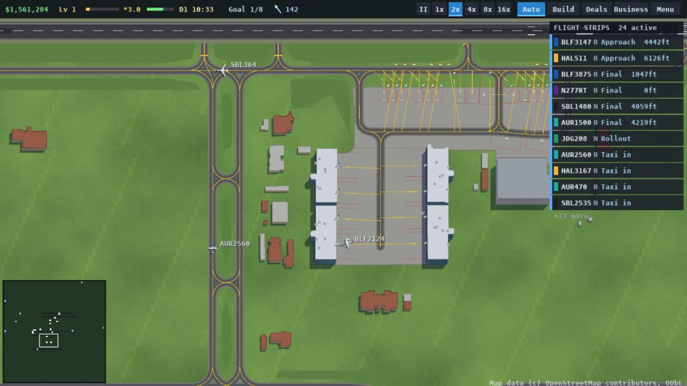

HALL 01 — THE AIRFIELDEST. BY GROK BOT

AirportSim
0.6.0-ALPHA.2ON THE BENCH — ACTIVE
An airport run like a small, stubborn country. Aircraft arrive with somewhere to be, airlines keep score of how you treat them, and every lever — tower, timetable, bank account, weather itself — sits within your reach. It is the studio's one active game. The markings and collision work are closed, the ground now renders from baked chunks at roughly twice the proof-frame speed, and a brand-new interface — designed from a blank page and approved by the owner — is being built slice by slice.